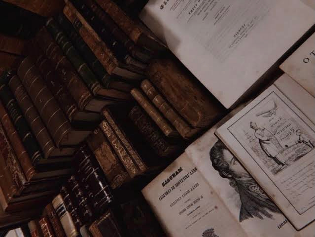

Literature: Another World Between Pages
Literature is everyone's most used way of telling their story.
In literature, probably the most amazing thing is that there is no limit. You can write anything you want and it still counts as literature. Edgar Allan Poe, for example , is a genius name of American literature. With his short stories and poems, he explains the murders and all of the savagery stuff in a poetic and aesthetic way. Normally, finding these types of psychotic side of life is very absurd. In this context, we comment and know those things fictional value.
Literature's importance is also about how it adds us a kind of creativity. Imagining all of those fictional worlds etc. is offerings us another perspective. Diving into writer's imagination is a unique experience for anyone who has a book-lover side.
No matter what we read, it is important to remind ourselves that there is a distinct between fiction and reality. Therefore, in this website sometimes we will read the most disgusting stories ever told or the clingiest love poems that we need to talk about. Writing and reading are the similar things if we have enough love for literature itself.